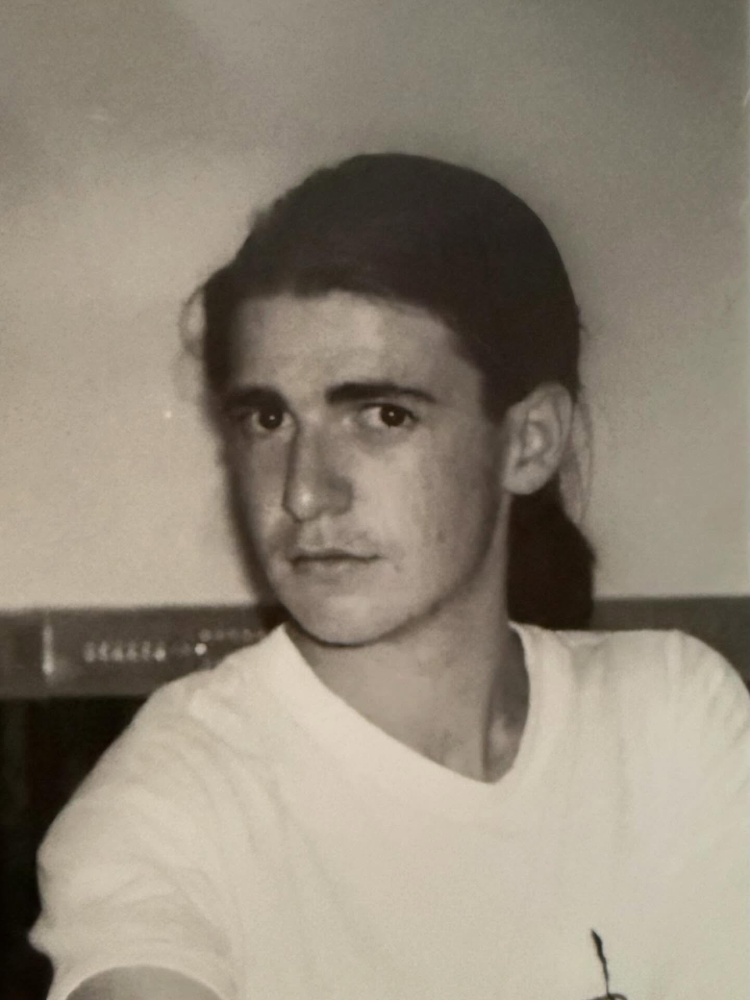

Trayectoria de su carrera artistica
Su trayectoria combina la práctica artística con la docencia y la divulgación. Además de su obra plástica, ha participado en numerosas exposiciones tanto en España como en el extranjero, ha dirigido proyectos editoriales y ha publicado libros sobre pensamiento artístico y pedagogía. Su presencia en redes sociales y plataformas como YouTube ha ampliado considerablemente su audiencia y ha llevado su visión crítica del arte a públicos no tradicionales.
Este recorrido ha consolidado a García Villarán como una figura influyente en el panorama del arte contemporáneo español, caracterizado por su mezcla de rigor técnico, crítica cultural y compromiso con la educación artística. Hoy su trabajo sigue ampliándose, combinando obra, pensamiento y enseñanza en formatos tradicionales y digitales.
